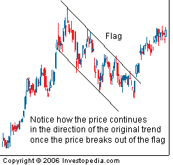

A technical charting pattern that looks like a flag with a mast on either side. Flags result from price fluctuations within a narrow range and mark a consolidation before the previous move resumes. Likewise, "pennant" formations are usually treated like flag formations because they are very similar in appearance, tend to show up at the same place in an existing trend, and have the same volume and measuring criteria.
Flags and pennants are among the most reliable of continuation patterns and only rarely produce a trend reversal. The only difference between the two patterns is that a flag resembles a parallelogram (or rectangle) marked by two parallel trend lines that tend to slope against the prevailing trend. The pennant, however, is identified by two converging trend lines and more horizontal which resembles a small symmetrical triangle. The important thing to remember is that they are both characterized by diminishing trade volume and though different, the measuring implications are the same for both patterns as demonstrated in the above illustration.
{kind=link}